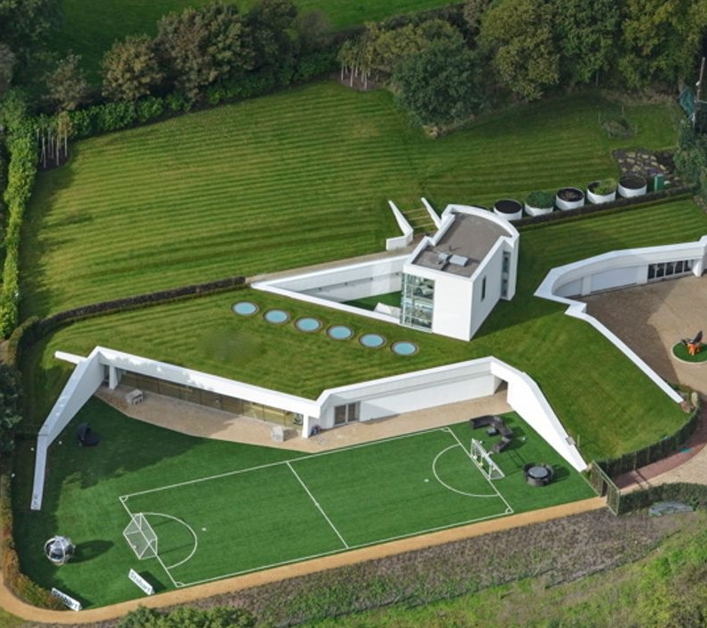

|  |
|
We are considered the first GYM in the Tri-state Area to provide GYM services with the main focus of providing your soccer needs such as Soccer Training, Fields and other items to relax or have fun.
Our Locations offered several amenities that other Gyms do not offer. For example we have indoor pool, gaming rooms, and other entertainment soccer pool, Soccer tennis, shopping center and TeqBall Rooms. We are the only GYM in the EAST Coast to provide Teq Ball tournaments within our members only.
Are you ready to be a part of this community? With more than 50 destinations, there is one for you to call your own. Please call us or visit us or simple subscribe using the Join NOW link
If you are a soccer fanatic, please come to have the best GYM experience you can possibly have. This experience includes not just GYM equipment and training but also some soccer games such as TeqBall, Foot Golf and Soccer Pool.